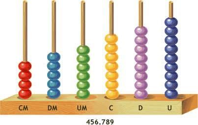
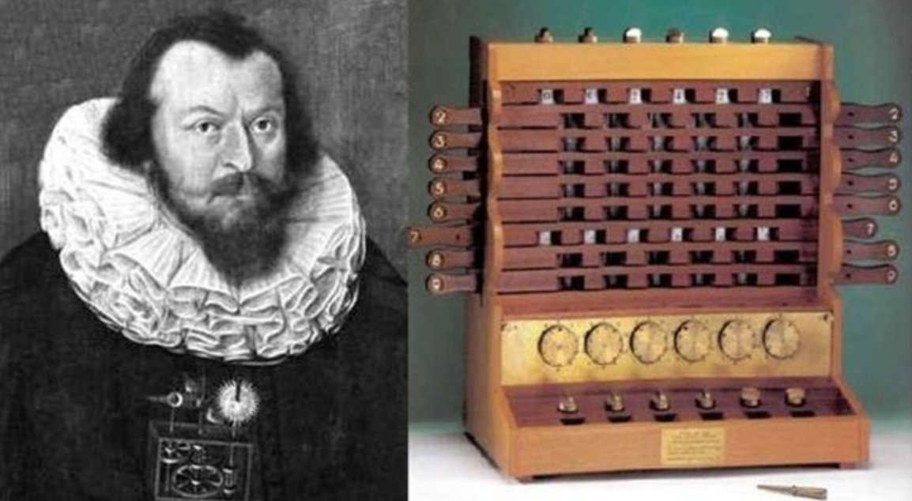
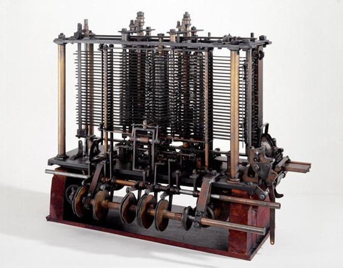
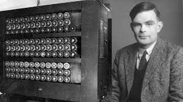
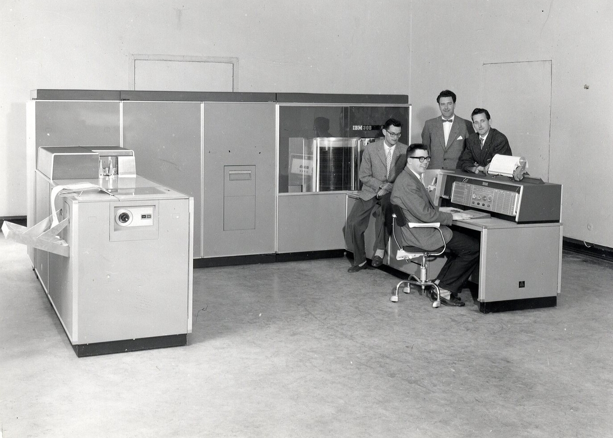
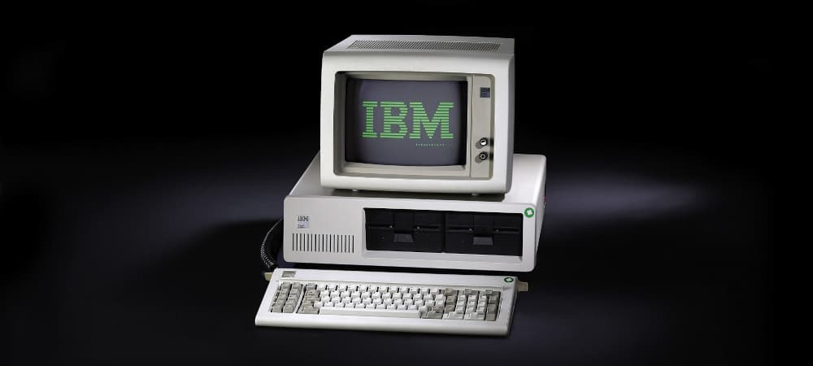

Linha do Tempo da Informática

2500 a.C. - Ábaco
Tudo começou com esta pequena invenção o Ábaco.
O Ábaco foi a primeira "calculadora" a existir , esta máquina foi concebida para facilitar a contagem de produtos e de gado. O ábaco é um instrumento de cálculo antigo, com origem na Mesopotâmia, que é utilizado para realizar operações aritméticas: Adição, Subtração, Multiplicação, Divisão, Cálculo de raiz.
O ábaco é composto por uma tábua de madeira com fios ou cordas paralelas, em cada um dos quais existem dez contas móveis. As contas são utilizadas para representar os números naturais, de acordo com a notação posicional de base 10.
2500 A.C

1623 - Calculadora de Wilhelm Schickard
Uma das primeiras máquinas de calcular, projetada para realizar operações matemáticas básicas. A construção poderia operar com um máximo de números de seis dígitos em todas as operações aritméticas básicas: adição, subtração, multiplicação e divisão. Acima de tudo, no entanto, ela conseguiu a transferência automática de dezenas, em que um pequeno sino provavelmente tocou quando o último dígito saltou de 9 para 0. Schickard era agora capaz de calcular os movimentos dos corpos celestes mais fácil e rapidamente do que pela cabeça e pela mão.

1801 - Tear de Joseph Marie Jacquard
Introduziu o uso de cartões perfurados para controlar a operação do tear, precursor da programação.
O tear de Joseph Marie Jacquard foi uma máquina mecânica inventada pelo francês Joseph Marie Jacquard (1752-1834) em 1801. A máquina era controlada por cartões perfurados, que forneciam os comandos para criar desenhos complexos em tecidos.
O tear de Jacquard foi uma das invenções mais importantes da história, por ter:
Mecanizado o trabalho de tecer, eliminando mão de obra e padronizando a qualidade do trabalho
Possibilitado a criação de estruturas e imagens complexas
Sido considerado o primórdio dos computadores
O tear de Jacquard funcionava da seguinte forma:
Cada linha de desenho era representada por um cartão perfurado
Ao anexar os cartões ao tear, a máquina criava automaticamente os padrões
Cada cartão controlava um único movimento da lançadeira
Os padrões intricados eram criados combinando vários cartões
O sucesso do tear de Jacquard foi tanto que, em sete anos, já havia 11 mil teares desse tipo operando na França.

1837 - Máquina Analítica de Charles Babbage
Considerada a primeira máquina de computação programável, embora nunca tenha sido concluída.
A maquina analítica incorporava uma unidade lógica aritmética, fluxo de controle na forma de ramificações condicionais, loops e memória integrada, tornando-o o primeiro projeto para um computador de uso geral que poderia ser descrito em termos modernos como Turing-completo.

1936 - Conceito de Máquina de Turing
Alan Turing propôs um modelo teórico de computação que fundamenta a teoria da computação moderna.
A Máquina de Turing é um modelo teórico de computador que serviu como base para o desenvolvimento da ciência da computação moderna. O matemático britânico Alan Turing (1912-1954) concebeu o dispositivo muitos anos antes dos computadores digitais atuais.
A Máquina de Turing é um modelo abstrato que se concentra nos aspectos lógicos do funcionamento de um computador, como a memória, os estados e as transições. O seu funcionamento é baseado em:
Uma fita infinita, dividida em células, que armazena os símbolos
Um dispositivo de leitura e gravação que se move na fita, interpretando e escrevendo os símbolos
Um dispositivo que registra o estado da máquina
Uma tabela de ações que indica o que a máquina deve fazer, como escrever um símbolo, mover o dispositivo de leitura e gravação, ou mudar o seu estado
Turing provou que a sua máquina é capaz de imitar qualquer sistema formal, o que a torna um computador universal. Ele também desenvolveu o Teste de Turing, que avalia se uma máquina é capaz de imitar o pensamento humano.
Turing também se envolveu na construção de máquinas físicas para quebrar os códigos secretos das comunicações alemãs durante a Segunda Guerra Mundial.

1943 - ENIAC
Um dos primeiros computadores eletrônicos de grande escala, usado para cálculos balísticos.
O ENIAC (Electronic Numerical Integrator and Computer) foi o primeiro computador eletrônico de grande escala e digital, e é considerado um dos pais dos computadores:
Foi desenvolvido por John Eckert e John Mauchly, em parceria com a universidade da Pensilvânia e a Eletronic Control Company
Foi criado a pedido do exército dos Estados Unidos para realizar cálculos balísticos durante a Segunda Guerra Mundial
Foi apresentado ao público em 1946 e ligado pela primeira vez em 1947
Era um computador gigante, pesando 30 toneladas e ocupando uma área de 180 m²
Tinha capacidade para processar 5 mil operações por segundo, como adições, multiplicações e divisões
O sistema operacional era baseado em cartões perfurados, operados por uma equipe de mulheres do exército, que são consideradas as primeiras programadoras
Seu consumo de energia era de 200 mil watts
O ENIAC revolucionou o mundo da computação e foi um marco na história da informática.

1956 - IBM 305 RAMAC
Primeiro computador a utilizar disco rígido, permitindo armazenamento de dados de forma mais eficiente.
O IBM 305 RAMAC (Random Access Method of Accounting and Control) foi o primeiro computador comercial a usar um disco rígido para armazenamento de dados, introduzido pela IBM em setembro de 1956. Este sistema revolucionário marcou uma mudança significativa na tecnologia de armazenamento de dados, permitindo acesso direto a informações armazenadas em um disco magnético, em vez de utilizar fitas magnéticas, que exigiam leitura sequencial.
O RAMAC 305 tinha um disco rígido com 50 discos de 24 polegadas, com capacidade total de cerca de 5 megabytes, uma quantidade de armazenamento pequena pelos padrões atuais, mas revolucionária para a época. Ele foi projetado para aplicações empresariais, especialmente em áreas como contabilidade e controle de inventários, que precisavam de acesso rápido a grandes volumes de dados.
Com seu grande tamanho físico e alta complexidade, o IBM 305 RAMAC foi uma inovação cara, mas fundamental no avanço das tecnologias de computação e armazenamento de dados, estabelecendo a base para o desenvolvimento dos discos rígidos modernos.
1969 - ARPANET
Rede que se tornou a base da internet moderna, conectando instituições acadêmicas e militares.
A ARPANET (Advanced Research Projects Agency Network) foi a primeira rede de computadores a implementar o conceito de comutação de pacotes e é amplamente reconhecida como o precursor da internet. Desenvolvida nos Estados Unidos no final dos anos 1960 pela ARPA (agora conhecida como DARPA), uma agência do Departamento de Defesa, o principal objetivo da ARPANET era criar uma rede de comunicação robusta e descentralizada que pudesse continuar funcionando em caso de falhas, como uma interrupção em uma de suas partes.
O projeto da ARPANET começou em 1969, quando conectou quatro universidades norte-americanas (UCLA, Stanford, UCSB e a Universidade de Utah), formando a primeira rede interligada. A ARPANET utilizava um protocolo inovador, a comutação de pacotes, que permitia que dados fossem divididos em pequenos blocos (pacotes), enviados individualmente e depois reagrupados no destino, tornando a transmissão mais eficiente e resiliente a falhas.
Ao longo da década de 1970, a ARPANET continuou a crescer, conectando mais universidades e instituições de pesquisa. Em 1983, a ARPANET adotou o protocolo TCP/IP, que se tornou o padrão da internet moderna. A partir daí, a rede evoluiu para o que conhecemos hoje como internet, desempenhando um papel fundamental na transformação da comunicação global e no desenvolvimento das tecnologias da informação. A ARPANET foi oficialmente desativada em 1990, mas seu legado vive como o alicerce da internet.

1981 - IBM PC
Lançamento do primeiro computador pessoal da IBM, popularizando o uso de computadores em lares e escritórios.
O IBM PC (Personal Computer), lançado em 1981, foi um marco na história da computação, popularizando o conceito de computadores pessoais. Conhecido como IBM 5150, ele usava o processador Intel 8088 e o sistema operacional PC-DOS, desenvolvido pela Microsoft. Com uma arquitetura modular e aberta, permitia fácil atualização de componentes e suporte a periféricos de terceiros.
O sucesso do IBM PC foi impulsionado por sua compatibilidade com hardware e software de outros fabricantes, o que facilitou a criação de "clones" por empresas como a Compaq. Esse modelo definiu muitos padrões da indústria e consolidou a era da computação pessoal.
1991 - World Wide Web
Tim Berners-Lee lançou a primeira página web, revolucionando a forma como acessamos informações.
A World Wide Web (WWW), criada em 1989 por Tim Berners-Lee, é um sistema de documentos interligados que podem ser acessados via internet usando navegadores. A WWW revolucionou a forma como as informações são compartilhadas, introduzindo a ideia de hipertextos — documentos que contêm links para outros conteúdos, permitindo navegação rápida e intuitiva.
A Web funciona sobre a internet, utilizando o protocolo HTTP (Hypertext Transfer Protocol) para transmitir dados e o HTML (Hypertext Markup Language) para formatar e exibir páginas. O primeiro site entrou no ar em 1991, e desde então, a WWW se tornou uma das maiores plataformas de disseminação de informações, interações sociais e comércio no mundo.

2007 - iPhone e Smartphones
Lançamento do primeiro smartphone moderno, que mudou a maneira como usamos tecnologia e internet.
O iPhone, lançado pela Apple em 2007, revolucionou a indústria de smartphones, estabelecendo novos padrões em design, funcionalidade e usabilidade. Combinando um telefone, tocador de música e navegador de internet em um único dispositivo, ele introduziu uma interface intuitiva de tela sensível ao toque, eliminando a necessidade de teclados físicos. O iPhone também trouxe o conceito de uma loja de aplicativos, a App Store, permitindo que desenvolvedores criassem e distribuíssem aplicativos para o público.
Os smartphones, em geral, são dispositivos móveis que integram funções de comunicação, navegação na internet, multimídia e aplicativos variados. Antes do iPhone, já existiam smartphones, como os da BlackBerry e Palm, mas o iPhone redefiniu a categoria com seu foco em uma experiência de usuário simplificada e recursos avançados. Hoje, os smartphones são centrais na vida moderna, permitindo acesso a redes sociais, serviços bancários, trabalho remoto, entre outras funcionalidades essenciais, e continuam a evoluir rapidamente com tecnologias como inteligência artificial, câmeras avançadas e conectividade 5G.

2020 - Inteligência Artificial
Avanços significativos em IA e aprendizado de máquina, impactando diversas áreas como saúde, finanças e entretenimento.
A inteligência artificial (IA) é um campo da ciência da computação que busca criar sistemas e máquinas capazes de realizar tarefas que normalmente exigem inteligência humana, como reconhecimento de padrões, tomada de decisões, aprendizado e resolução de problemas. Utilizando técnicas como aprendizado de máquina (machine learning), redes neurais e processamento de linguagem natural, a IA tem se desenvolvido rapidamente nos últimos anos, tornando-se uma tecnologia cada vez mais presente em diversos setores.